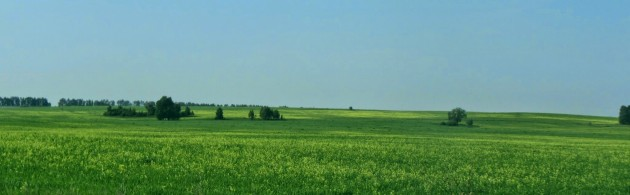

| Главная | Арендаторам | Галерея | Контакты |
|  |
В аренду денника входит:
|
Вопросы и ответы |
| Q: Как мне получить доступ к видеокамерам конюшни? |
| A: Установите на мобильный телефон/планшет приложение 'vmeye super' и обращайтесь к нам за настройками видеонаблюдения. |
| Q: Могу ли я позвонить на конюшню и узнать состояние своего коня? |
| A: Да, мы предоставим вам телефон дежурного конюха. |